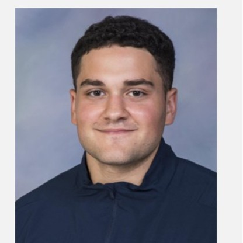

Elian Ahmar
Senior at Rice University studying Computer Science with a Minor in Data Science.
Senior at Rice University studying Computer Science with a Minor in Data Science.
I implemented software that wrangled patient data and extracted features from ABP and ECG waveform. I then Built linear and decision tree regressors to predict cardiac output in pediatric patients at Texas Children's Hospital.
I constructed an autoencoder responsible for performing anomaly detection on system log files. I then integrated my model into a Nvidia morpheus pipeline which streams system log files from kafka. Pushed code to production to be used in government frameworks. This was an unclassified project.
I designed an automated webscraper responsible for scraping metadata from craigslist housing ads. I then employed SBERT an nlp model to discern if their were duplicate ads. This research project was commisioned by the sociology department at Rice. The research project was aimed at finding disparities in housing market availability for minority individuals.